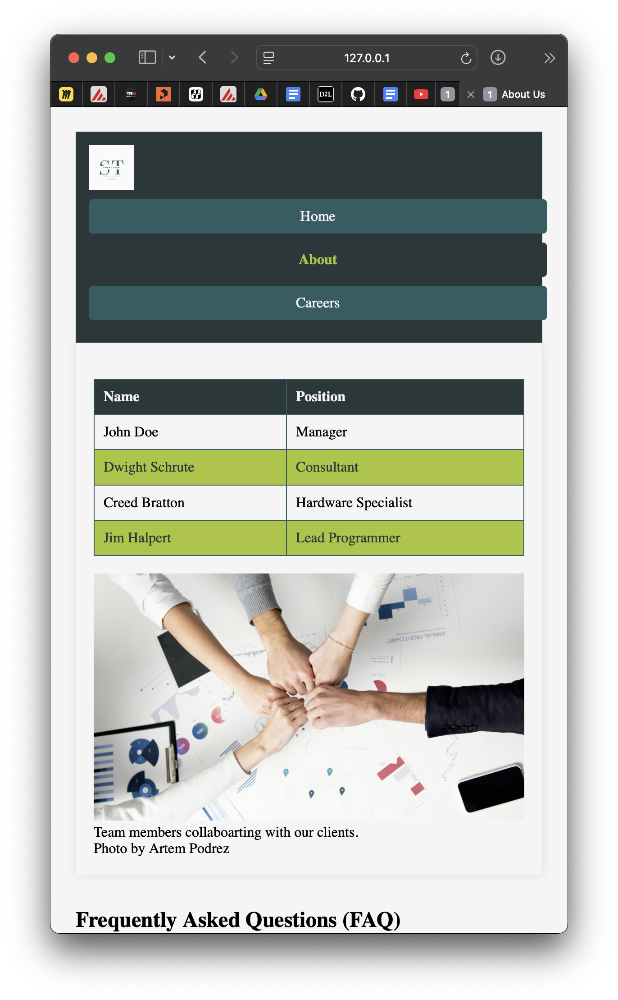
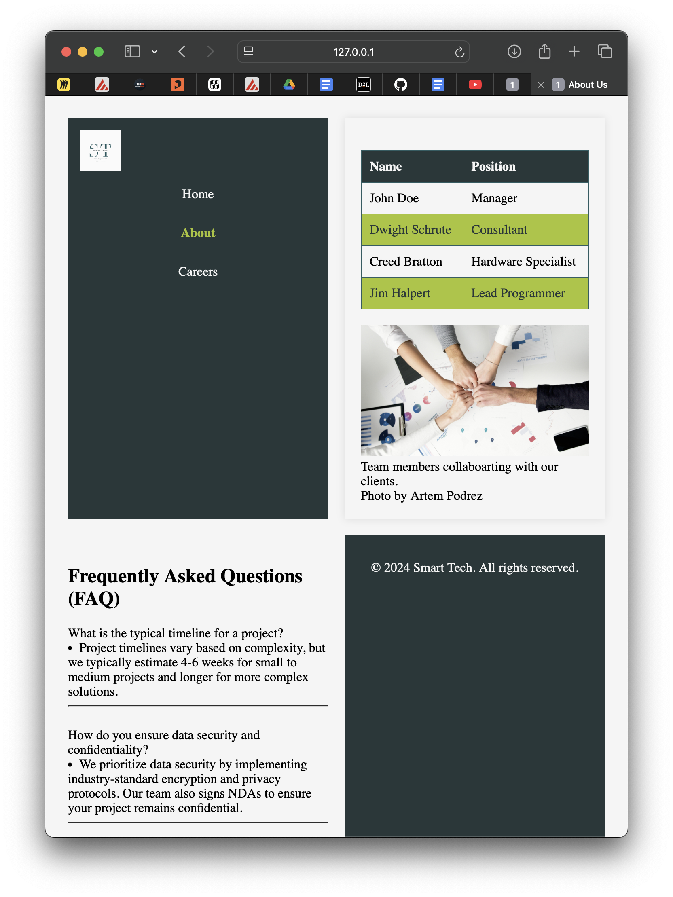
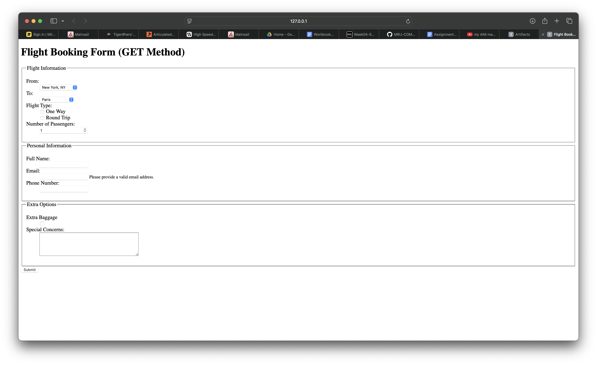

ePortfolio Design
This is my Eportfolio. It includes elements from everything that I have learned from this class. The layout is a grid template that is responsive to the viewport width and will change size depending on how wide it is to most effectively present the content. There is also a carrousel that I made work with a bit of javascript that I spent way too long making work but the result is something i am happy with.
this is the sketch I made for the design layout of this website.
Comp 2511 Assignment 2
This assignment taught me about variable viewport scales and how to change the grid layout depending on the size of the device. For this project we took the website from assignment 1 and made it scale to different viewport sizes so that it would fit on smaller or larger devices well. to do this we used the @media tag to define max widths for various things. This worked quite well.
Click here to visit the live version of this assignment  Comp 2511 Assignment 1 part 1
For this project we sketched out a layout for a website that would be user friendly and chose a colour pallet that suited the project, as well as being accessible.
Comp 2511 Lab 3
This lab we learned how forms worked, and the difference between GET and POST. This lab helped me on this assignment as well because I was able to use a similar template of form to make the fillable form for contacting me using the POST method.
